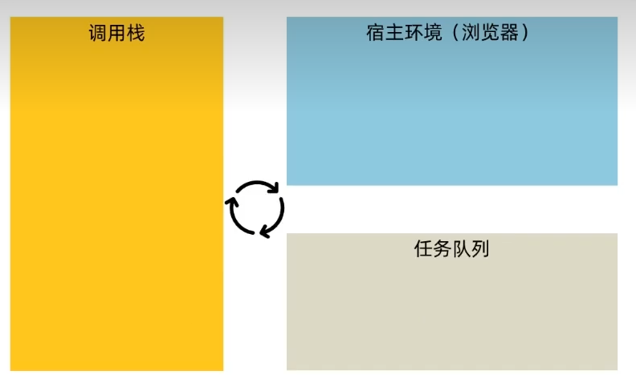
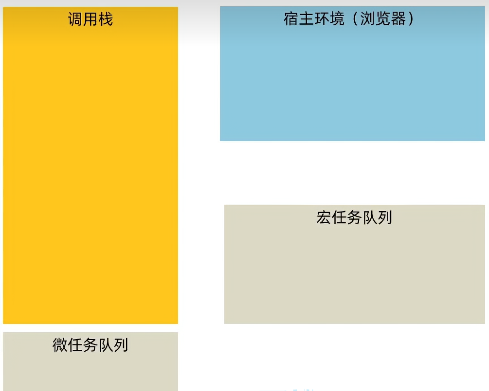

语法：
引入axios.js：https://cdn.jsdelivr.net/npm/axios/dist/axios.min.js
使用axios函数
传入配置对象
使用.then回调函数接受结果，并作后去处理
xxxxxxxxxx141axios({url:'目标资源地址'2 }).then(result)=>{3 4}5//示例-获取省份列表6<script src="https://cdn.jsdelivr.net/npm/axios/dist/axios.min.js"></script>7 <script>8 //示例-获取省份列表9 axios({10 url: 'https://hmajax.itheima.net/api/province'11 }).then(result => {12 console.log(result.data.list)13 })14 </script>
url：统一资源定位符，简称网址，用于访问网络资源
xxxxxxxxxx211
2axios({3url:'目标资源地址',4params:{5参数名:值6}7}).then(result=>{8//返回对服务器的数据做后续处理9})10
11
12 //示例-获取省份对应的城市列表13 axios({14 url: 'https://hmajax.itheima.net/api/city',15 params: {16 pname: '河北省'17 }18}).then(result => {19 console.log(result.data.list)20
21})需求：根据输入的省，市查询地区，并渲染列表
xxxxxxxxxx1051<html lang="en">3
4<head>5 <meta charset="UTF-8">6 <meta name="viewport" content="width=device-width, initial-scale=1.0">7 <title>Document</title>8
9</head>10<style>11 * {12 margin: 0;13 padding: 0;14 box-sizing: border-box;15 }16
17 .box {18 width: 660px;19 margin: 0 auto;20 border: 1px solid;21 }22
23 button {24 height: 50px;25 width: 40px;26 }27
28 .chengshi,29 .shengfen {30 width: 300px;31 height: 80px;32 display: inline-block;33 }34
35 font {36 width: 200px;37 display: inline-block;38 }39
40 input[type="text"] {41 width: 300px;42 height: 50px;43 padding-left: 10px;44 font-size: 20px;45 }46
47 li {48 list-style: none;49 margin-left: 20px;50 height: 30px;51 }52
53 .tip {54 font-size: 22px;55 margin-top: 10px;56 }57</style>58
59<body>60 <div class="box">61 <div class="shengfen">62 <font>请输入省份/直辖市</font><input type="text">63 </div>64 <div class="chengshi">65 <font>请输入城市</font><input type="text">66 </div>67 <button>查询</button>68 <font class="tip">该城市地区</font>69 <ul class="diqu"></ul>70 </div>71 <script src="https://cdn.jsdelivr.net/npm/axios/dist/axios.min.js"></script>72 <script>73 const but = document.querySelector('button')74 but.addEventListener('click', function () {75 const sheng = document.querySelector('.shengfen input')76 const shi = document.querySelector('.chengshi input')77
78 axios({79 url: 'https://hmajax.itheima.net/api/area',80 params: {81 pname: sheng.value,82 cname: shi.value83 }84 }).then(result => {85 if (result.data.message === '获取地区县成功') {86 const diqu = document.querySelector('.diqu')87 diqu.innerHTML = ''88 for (let i = 0; i < result.data.list.length; i++) {89 let li = document.createElement('li')90 li.innerHTML = `${result.data.list[i]}`91 diqu.appendChild(li)92
93 }94 }95
96 else {97 alert(result.data.message)98
99 }100 })101 })102 </script>103</body>104
105</html>对服务器资源，要执行的操作
| 请求方法 | 操作 |
|---|---|
| get | 获取数据 |
| post | 提交数据 |
| put | 修改数据（全部） |
| delete | 删除数据 |
| patch | 修改数据（部分） |
url:请求的url地址 method:请求的方法，get可以省略 data:提交数据
xxxxxxxxxx81//axios 错误处理的语法2axios({3 //请求内容4}).then(result=>{5 //处理数据6}).catch(error=>{7 //处理错误8})示例
xxxxxxxxxx231<button class="zhuce">注册</button>2 <script src="https://cdn.jsdelivr.net/npm/axios/dist/axios.min.js"></script>3
4 <script>5 document.querySelector('.zhuce').addEventListener('click', () => {6 axios({7 url: 'https://hmajax.itheima.net/api/register',8 method: 'post',9 data: {10 username: 'ceshiopen4',11 password: '123456789'12 }13
14 }).then(result => {15 // alert()16 alert(result.data.message);17 }).catch(error => {18 alert(error.response.data.message);19 })20
21 })22
23 </script>HTTP报文 请求报文组成 响应报文组成
响应行（状态行）：协议，响应码，状态信息 响应头：以键值对形式携带附加信息 空行：分隔响应头 响应体：返回的资源
响应状态码 用来表示请求是否成功
| 状态码 | 说明 |
|---|---|
| 1XX | 信息 |
| 2XX | 成功 |
| 3XX | 重定向消息 |
| 4XX | 客户端错误 |
| 5XX | 服务器错误 |
作用：快速收集表单元素的值
语法：
xxxxxxxxxx331<!-- 基础语法 -->2<!-- 首先读取form -->3const form = document.querySelector('.myform')4<!-- 调用serialize获取表单的全部数据 -->5<!-- 6hash:设置获取数据结构7 -true:获取的是JS对象8 -flase:获取的是查询字符串9empty:设置是否读取空数据10 -true:获取空值11 -flase:不获取空值12-->13 const data = serialize(form, { hash: true, empty: true })14 console.log(data.username);15 console.log(data.password);16
17<!-- 示例 -->18<form action="javascript:;" class="myform">19 <input type="text" name="username">20 <input type="text" name="password">21 <input type="button" value="提交" class="but">22 </form>23
24 <script src="lib/form-serialize.js"></script>25 <script>26 document.querySelector('.but').addEventListener('click', () => {27 const form = document.querySelector('.myform')28 const data = serialize(form, { hash: true, empty: true })29 console.log(data.username);30 console.log(data.password);31 })32
33 </script>bootstrap弹窗 模态弹框（Modal）-Bootstrap中文网
xxxxxxxxxx31<!-- 引入样式表和js文件 --!>2<link href="https://cdn.jsdelivr.net/npm/bootstrap@5.2.2/dist/css/bootstrap.min.css" rel="stylesheet">3<script src="https://cdn.jsdelivr.net/npm/bootstrap@5.2.2/dist/js/bootstrap.min.js"></script>通过css属性方式控制弹窗显示与隐藏
显示： 在按钮中添加data-bs-toggle="modal"（显示）和data-bs-target="css选择器（用于区分不同的弹窗标签）" 隐藏：data-bs-dismiss="modal"
xxxxxxxxxx11<button type="button" class="but but-primary" data-bs-toggle="modal" data-bs-target=".first">点击</button>
JS控制弹窗显示显示或隐藏
xxxxxxxxxx91//方法2//创建弹窗对象3const a=doc.qs() //读取弹窗对象4//使用引入弹窗文件中的方法得到对象5const b = new bootstrap.Modal(a)6//显示弹窗7b.show()8//隐藏弹窗9b.hide()
获取图书数据：
xxxxxxxxxx101axios({2 url: 'https://hmajax.itheima.net/api/books'3 , params: {4 creator: '老李'5 }6 }).then(result => {7 console.log(result.data.data);8 }).catch(error => {9 console.log(error);10 })将图书数据处理并渲染到页面中
xxxxxxxxxx11
AJAX基本原理-XMLHttpRequest
XMLHttpRequest（XHR）对象用于与服务器交互。通过 XMLHttpRequest 可以在不刷新页面的情况下请求特定 URL，获取数据。这允许网页在不影响用户操作的情况下，更新页面的局部内容。XMLHttpRequest 在 AJAX 编程中被大量使用。
axios内部采用XMLHttpRequest与服务器交互
基本使用 步骤：
创建XMLHttpRequest对象
xxxxxxxxxx91<script>2 const xhr = new XMLHttpRequest()3 xhr.open('get', 'https://hmajax.itheima.net/api/province')4 xhr.addEventListener('loadend', () => {5 //交互完成后执行的函数6 console.log(xhr.response)7 })8 xhr.send();9 </script>查询参数 浏览器提供给服务器额外的信息，让服务器返回浏览器想要的数据
xxxxxxxxxx21xhr.open('get', 'https://hmajax.itheima.net/api/city?pname=辽宁省')2//在url链接后拼接查询参数
传递多个参数 格式：url?参数1=值1&参数2=值2
xxxxxxxxxx81const parm = new URLSearchParams({2// 参数名1: 值1,3// 参数名2: 值24a: 1,5b: 26})8console.log(parm.toString());
数据提交
xxxxxxxxxx181<script>2 const data = { username: 'zhangshansir', password: '123456789' }3
4 const xhr = new XMLHttpRequest()5 // xhr.open('post', 'https://hmajax.itheima.net/api/register')6 // xhr.addEventListener('loadend', () => {7 // console.log(JSON.parse(xhr.response).message);8 // })9 // xhr.setRequestHeader("Content-Type", "application/json")10 // xhr.send(JSON.stringify(data))11 xhr.open('post', 'https://hmajax.itheima.net/api/login')12 xhr.addEventListener('loadend', () => {13 console.log(JSON.parse(xhr.response).message);14 })15 xhr.setRequestHeader("Content-Type", "application/json")16 xhr.send(JSON.stringify(data))17</script>18
用于表示一个异步操作的最终完成或失败及其结果值
xxxxxxxxxx241<script>2 // 1创建promise对象3 const p = new Promise((resolve, reject) => {4 // 2执行异步任务，并传递结果5 // 成功调用resolve(值) 触发then()6 // 失败调用reject(值) 触发catch()7 // setInterval(() => {8 // resolve("成功")9 // }, 2000)10 setInterval(() => {11 reject(new Error("失败"))12 }, 2000)13 }14 )15 // 3接收结果16 p.then(result => {17 // 成功执行的语句18 console.log(result);19 }).catch(error => {20 // 失败执行的语句21 console.log(error);22 })23
24 </script>promise的三种状态
new promise()——待定（pending）——初始状态，未兑现，未拒绝
resolve()——已兑现（fulfilled）成功
reject()——已拒绝（rejected）失败
步骤
定义myaxios函数，配置接收对象，返回promise对象
发起XHR请求，默认方法为‘get'
调用成功/失败的处理程序
使用这个封装函数
xxxxxxxxxx261<script>2 function myox(das) {3 const p = new Promise((y, n) => {4 const a = new XMLHttpRequest()5 a.open(das.me || 'get', das.url)6 a.addEventListener('loadend', () => {7 if (a.status >= 200 && a.status < 300) {8 y(a.response)9 }10 else {11 n(a.response)12 }13 })14 a.send()15
16 })17 p.then(result => {18 console.log(result);19 }).catch(errors => {20 console.log(errors);21 })22 }23 myox({24 url: 'https://hmajax.itheima.net/api/province'25 })26 </script>xxxxxxxxxx381 <script>2 function myoxdiqu(das) {3 if (das.pram) {4 const pr = new URLSearchParams(das.pram)5 console.log(pr.toString());6 das.url += `?${pr.toString()}`7 console.log(das.url);8 }9 const p = new Promise((y, n) => {10 const a = new XMLHttpRequest()11 const searchdata = new URLSearchParams(das.pram)12 a.open(das.me || 'get', `${das.url}`)13 a.addEventListener('loadend', () => {14 if (a.status >= 200 && a.status < 300) {15 y(a.response)16 }17 else {18 n(a.response)19 }20 })21 a.send()22
23 })24 p.then(result => {25 console.log(result);26 }).catch(errors => {27 console.log(errors);28 })29 }30 myoxdiqu({31 // url: 'https://hmajax.itheima.net/api/area',32 url: 'https://hmajax.itheima.net/api/city',33 pram: {34 pname: "河北省",35 // cname: "沧州市"36 }37 })38 </script>xxxxxxxxxx451 <script>2 function myoxdiqu(das) {3 if (das.pram) {4 const pr = new URLSearchParams(das.pram)5 console.log(pr.toString());6 das.url += `?${pr.toString()}`7 console.log(das.url);8 }9 const p = new Promise((y, n) => {10 const a = new XMLHttpRequest()11 const searchdata = new URLSearchParams(das.pram)12 a.open(das.me || 'get', `${das.url}`)13 a.addEventListener('loadend', () => {14 if (a.status >= 200 && a.status < 300) {15 y(a.response)16 }17 else {18 n(a.response)19 }20 })21 if (das.data) {22 a.setRequestHeader("Content-Type", "application/json")23 a.send(JSON.stringify(das.data))24 }25 else { a.send() }26
27
28 })29 p.then(result => {30 console.log(result);31 }).catch(errors => {32 console.log(errors);33 })34 }35 myoxdiqu({36
37 url: 'https://hmajax.itheima.net/api/register',38 me: 'post',39 data: {40 username: 'aac12345',41 password: '123456'42 }43
44 })45 </script>同步代码：逐行执行，需原地等待结果后，才继续向下执行 异步代码：调用后耗时，不阻塞代码执行，在将来完成后触发一个回调函数
当多层回调函数形成嵌套关系时，就会成为回调函数地狱
xxxxxxxxxx111<script>2 setTimeout(function () { //第一层3 console.log('第一层');4 setTimeout(function () { //第二程5 console.log('第二程');6 setTimeout(function () { //第三层7 console.log('第三层');8 }, 1000)9 }, 1000)10 }, 1000)11 </script>回调地狱就是为是实现代码顺序执行而出现的一种操作，它会造成我们的代码可读性非常差，后期不好维护。
可以使用promise方式链式调用解决回调函数地狱问题 使得代码的可读性高，易于维护
xxxxxxxxxx311<script>2 // 解决方法-链式调用3 console.log('解决');4 const p1 = new Promise((res, rej) => {5 setTimeout(() => {6 res('第一层')7 }, 1000);8 })9 const p2 = p1.then(result => {10 console.log(result);11 return new Promise((res, rej) => {12 setTimeout(() => {13 res(result + '--第二层')14 }, 1000)15 })16 })17 const p3 = p2.then(result => {18 console.log(result);19 return new Promise((res, rej) => {20 setTimeout(() => {21 res(result + '--第三层')22 }, 1000)23 })24 })25 p3.then(result => {26 console.log(result);27
28 })29
30
31 </script>async function 声明创建一个绑定到给定名称的新异步函数。函数体内允许使用 await 关键字，这使得我们可以更简洁地编写基于 promise 的异步代码，并且避免了显式地配置 promise 链的需要。
await 操作符用于等待一个 Promise 兑现并获取它兑现之后的值。它只能在异步函数或者模块顶层中使用
async函数和await解决回调函数地狱
xxxxxxxxxx231<script src="https://cdn.jsdelivr.net/npm/axios/dist/axios.min.js"></script>2 <script>3 // async函数和await4 console.log('async函数和await');5 // 获取省市地区的第一个默认值6 // 使用async修饰函数7 async function getdata() {8 const p = await axios({ url: 'https://hmajax.itheima.net/api/province' })9 console.log(p.data.list[0]);10 const c = await axios({11 url: 'https://hmajax.itheima.net/api/city', params: { pname: p.data.list[0] }12 })13 console.log(c.data.list[0])14 const pc = await axios({15 url: 'https://hmajax.itheima.net/api/area', params: {16 pname: p.data.list[0], cname: c.data.list[0]17 }18 })19 console.log(pc.data.list[0])20
21 }22 getdata()23 </script>xxxxxxxxxx41//使用try-catch方法进行错误捕获2try{}3//当代码发生错误时，会进入catch中执行相应的操作4catch(error){}JavaScript 有一个基于事件循环的并发模型，事件循环负责执行代码、收集和处理事件以及执行队列中的子任务。
JavaScript是单线程的，为了让耗时的代码不阻塞其他代码执行，设计了事件循环模型

同步任务会被放入调用栈中立即执行，异步任务会被浏览器托管，条件完成后放入任务队列，再被调用栈执行
ES6后引入了promise对象，让js引擎也可以发起异步任务
异步任务分为：
宏任务：由浏览器环境执行的异步代码
微任务：由js引擎环境执行的异步代码
微任务的优先权大于宏任务 
概念：合并多个promise对象，等待所有同时成功完成（或某一个失败），做后续逻辑
语法
xxxxxxxxxx281<script>2const p =Promise.all([promise对象1,promise对象2,,promise对象n])3p.then(result=>{4//result结果：[p1成功结果，p2成功结果,.....]5}).catch(error=>{6//第一个失败的promise对象抛出的异常7})8</script>9
10示例：获取多个城市的天气信息11<script src="https://cdn.jsdelivr.net/npm/axios/dist/axios.min.js"></script>12<script>13 const cityid = ['110100', '310100', '440100', '440300']14 const p1 = []15 for (let i = 0; i < cityid.length; i++) {16 p1[i] = axios({17 url: "https://hmajax.itheima.net/api/weather", params: {18 city: `${cityid[i]}`19 }20 })21 }22 const p = Promise.all(p1).then(result => {23 const abc = result.map((e, i) => {24 return `<li>${e.data.data.area}---${e.data.data.weather}</li>`25 })26 document.querySelector('body').innerHTML = `<ul>${abc}</ul>`27 })28</script>